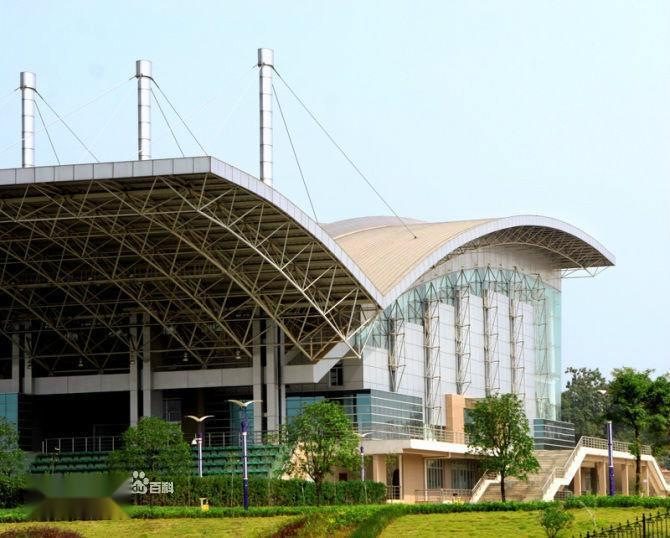
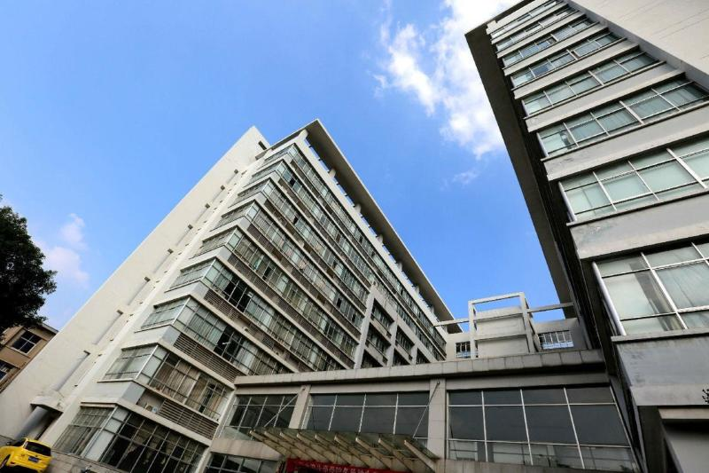

.jpg)
.jpg)
.jpg)
湘潭大学（Xiangtan University），简称“湘大”，创办于1958年，是毛泽东主席亲自倡导创办的综合性全国重点大学。1958年9月10日，毛泽东亲笔题写“湘潭大学”校名，并嘱托“一定要把湘潭大学办好”。学校由湖南省人民政府与中华人民共和国教育部、国家国防科技工业局重点共建。入选“111计划”、国家特色重点学科项目建设高校、中西部高校基础能力建设工程、中国政府奖学金来华留学生接收高校、国家大学生创新性实验计划、湖南省2011计划、卓越法律人才教育培养计划等，是全国首批硕士学位授权单位，湖南省首批招收留学生高校，是全国首批深化创新创业教育改革示范高校，全国50所“毕业生就业典型高校”之一。 湘潭大学是湖南四所全国百强大学之一，有“计算湘军”的美学，化学、材料科学、工程学、数学四个学科ESI排名进入全球前1%，是全国流变力学、消费经济学发源地，是全国10个国家级法学人才培养模式创新实验区之一、8所“国家专利协同运用试点单位”高校之一，建有全国首家信用风险管理学院。
.jpg)
中文名
湘潭大学
外文名
Xiangtan University
简 称
湘大（XTU）
创办时间
1958年
类 别
公立大学
类 型
综合
属 性
全国重点大学
省部共建大学
111计划
中西部高校基础能力建设工程
主管部门
湖南省
现任领导
周益春（校长）
硕士点
学术学位授权一级学科31个
专业学位授权类别13个
博士点
学术学位授权一级学科15个
博士后
科研流动站11个
院系设置
商学、法学、哲学、文学、数学、计算机、信息工程、材料科学与工程、机械工程、化学工程等
校 训
博学笃行 盛德日新
校 歌
湘潭大学校歌
校庆日
9月10日
地 址
湖南省湘潭市雨湖区
院校代码
10530
知名校友
袁亚湘、周向宇、欧进萍、许小曙、朱亚当、胡敏、陈小华、鲍春来
所属地区
中国 湖南 湘潭
国家重点学科
3个
国防特色学科
4个
国家特色专业
11个
专职院士
3人
长江学者
6人
科研平台
4个国家级理工科科研平台
研究基地
2个教育部人文社科重点研究基地

以人名校的湘大人：
截止2016年，中国健在的数学领域的中国科学院院士一共37人，其中60后8人，分别是张平文、周向宇、陈永川、张伟平、鄂维南、江松、席南华、袁亚湘。湘大数学与计算科学学院本科毕业生2位，分别是袁亚湘、周向宇。[123]
湘大毕业生中，院士或会士五人（中国科学院院士、发展中国家科学院院士袁亚湘[126]、周向宇[127]，中国工程院院士欧进萍，美国数学学会会士、美国工业与应用数学学会会士许进超[128]、袁亚湘[126]，美国光学学会会士余建军等）
湘大毕业生中，长江学者特聘（讲座）教授14人（许进超、周向宇、王雪华、钟建新、袁辉球、郑学军、游建强、李建华、余建军、贺跃辉、李佑新、周俊良、曾晓洋、蒋丽忠[129]），其中本科校友长江学者特聘教授12人；
湘大毕业生中，国家杰出青年科学基金获得者20人（袁亚湘、欧进萍、许进超、周向宇、周益春、周爱辉、王斌、曹道民、范青华、游建强、黄云清、王雪华、郑学军、贺跃辉、余建军、吴宇平、曾晓洋、胡俊、蒋丽忠、汪夏燕）。
湘大毕业生中，国家科学技术奖获得者12人以上（国家自然科学二等奖：袁亚湘[115]、周向宇[127]等；国家技术发明奖二等奖：李华伟[130]等；国家科技进步一等奖：郭莉[131]、张智江等，国家科技进步二等奖：欧进萍[132]、陈益强[133]、郭莉[131]、杨岳湘[134]、谭光明[135]、王兆其、蒋丽忠[136]等）
.jpg)
校园环境
湘潭大学地处长株潭城市群核心区域，距长沙市中心仅30多分钟车程，交通便利[15]。湘潭大学立足“生态校园、数字校园、文化校园”的建设目标，占地面积3200亩，建筑面积约100万平方米。校园绿地率已达到52%，绿化覆盖率达到55%，基本形成了以三个广场为核心，四山、三园、三泉等景点为主体，画眉潭、荷花池、琴湖等水体为纽带的山水生态校园体系。

校歌
作词：集体 作曲：王佑贵
韶峰高，湘水长。人文胜地，科教殿堂！恰同学少年，扬青春航帆。经风雨，求大道！博学笃行，做国家栋梁！做国家栋梁！ 韶峰高，湘水长。荟萃中西，传承湖湘！兴千秋大业，谱天下华章。通古今，怀忧乐！盛德日新，做国家栋梁！做国家栋梁！
.jpg)
毛主席铜像、三道拱门、一教的玉兰花、勤人坡的樱花、画眉潭的荷花等景观颇负盛名。学校是全国66所本科院校教育信息化试点单位之一。2018级新生宿舍全部安装空调[41]。有线无线网络覆盖所有教学、办公区域和学生公寓、宿舍区域和主要室外公共场所。湘潭大学的校门——三道拱门，建立于上世纪80年代初，是学校的标志性建筑。